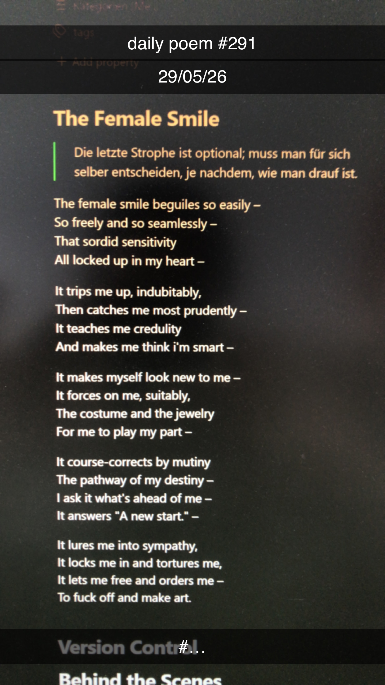

The Female Smile
[291]The female smile beguiles so easily –
So freely and so seamlessly –
That sordid sensitivity
All locked up in my heart –
It trips me up, indubitably,
Then catches me most prudently –
It teaches me credulity
And makes me think I'm smart –
It makes myself look new to me –
It forces on me, suitably,
The costume and the jewelry
For me to play the part –
It course-corrects by mutiny
The pathway of my destiny –
I ask it what's ahead of me –
It answers, "A new start."

Anmerkungen
It lures me into sympathy,
It locks me in and tortures me,
It lets me free and orders me –
To fuck off and make art.